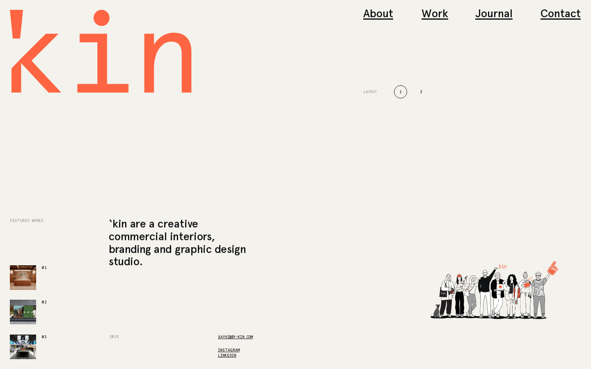

manchester interiors & branding studio · warm off-white + coral · monospace-style wordmark · switchable layouts · underlined nav links · tiny mono caps labels · line-drawn team illustration · stacked project-name index
#f4f2ed#111214#111214#f4f2ed#e8e5de#6c6c6b#111214#fe6e4e#111214#fe6e4e#111214#fe6e4e